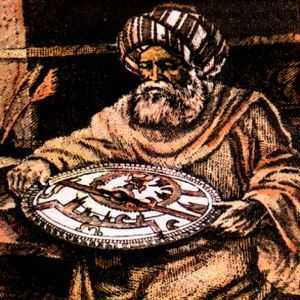

Battani
Devrinin en önemli astronomlarından ve matematikçilerinden olan Battâni (858-929), Sâbit ibn Kurrâ gibi, Urfa'nın Harran Bölgesi'ndendir.
Rakka'da özel bir gözlemevi kurmuş ve burada 887-918 tarihleri arasında son derece önemli gözlemler yapmıştır. Güneş, Ay ve gezegenlerin hareketlerini gözlemlemiş, yörüngelerini doğru bir biçimde belirlemeye çalışmıştır. Güneş ve Ay tutulmaları ile ilgilenmiş, mevsimlerin süresini büyük bir doğrulukla hesaplamıştır. Ayrıca, ekliptiğin eğimini de dakik olarak belirlemeyi başarmıştır.
Aynı zamanda matematikçi de olan Battâni, bu alanda da son derece önemli çalışmalar yapmıştır. Sinüs, kosinüs, tanjant, kotanjant, sekant ve kosekantı gerçek anlamda ilk defa kullanan bilim adamının Battâni olduğu söylenmektedir. Battâni, çalışmaları sırasında bazı temel trigonometrik bağıntılara ulaşmış ve bunları astronomik hesaplamalarda kullanmıştır.
Battani'nin Eserleri
1. Kitâbü Mârifet-il Metâli-il Bürûc fî mâ beyne erbe-il felek: On iki burcun gök küresinin dörtte birindeki doğuş yerlerinin bilinmesi:
Ay´in tutulması, ay ve yıldızların doğuş yerlerinden bahseder. Dunthorn 1794´te ayin asırlık hızını hesaplarken Battânî´nin ay ve güneş tutulmalarıyla ilgili rasatlarından oldukça faydalanmıştır. Boylamlari 0° den 36° ye kadar kıymetlerine tekabül eden yıldızların doğuş
yerlerini gösteren bir katalogdur. Böylece bir cetveli ilk defa ilim dünyasına kazandıran Battânî olmuştur. Daha önce yapılan Habas el-Hasîb adli ziycde (yıldız katalogu) böyle bir cetvel bulunmamaktadır.
2. Risâletünfî tahkîk-i akdâr-il ittisâlât: Yıldızların Yanyana gelme ölçülerinin araştırılması hakkındaki kitapçık: Yıldızların enlemlerinden faydalanarak ışıklarını göndermelerini küresel trigonometriden faydalanarak izah etmektedir.
3. Serh-ul Makâlât-il erbai li-Batlamyus: Batlamyus´un "Dört Kitap" adli eserinin açıklaması.
4. Ez-Zîyc:Astronomiden bahsetmektedir.. Battânî´nin en önemli ve günümüze kadar gelebilen tek kitabidir. Eser Battânî´nin rasatlarindan elde ettigi neticeleri de icine almaktadir. Bu eser yalniz Islâm dünyasinda degil Ortacagda ve Rönesansin ilk devrelerinde Avrupa küresel trigonometri üzerinde derin tesirler icra etmistir.
Kitap Kral X.Alfons(öl.1284) tarafindan Arapcadan Ispanyolca´ya tercüme ettirilmistir. 1143 yilinda Ispanya´da Robertus Retinensis tarafindan tercüme edilmis ise de günümüze kadar gelemeden kaybolmuştur. Ayrica kitap 12.yüzyilin ilk yarisinda Tivoli´li Piato Tiburtinus tarafindan Latinceye cevrilmistir.
Ayrica Regiomantanus(1436-1476), Sabiî Cetvelleri adıyla şöhret bulan bu ziycleri astronomiye ait önsözüyle bir serhini Latince´ye cevirmistir. Önsöz 1537´de Fergânî(?-860) nin eseriyle birlikte Nürnberg´de basilarak Avrupa ilim dünyasina sunulmustur. 1645´te de Bolonya´da tek eser hâlinde "Johannes Regiomontanus"´un bir kaç ilavesiyle "Albategnius (Battânî)´un Astronomi ilmine dair Eseri" adi altında Latince bir baslıkla yayınlanmıştır.
Kopernik(1473-1543)de bu İslâm âliminin eserleriyle etraflica ilgilenmis ve cok istifadeler etmistir. Onun eserleri 1800 yilinda bile Kahire´li Ibni Yunus (?-1009)´un eserleriyle birlikte Fransiz Laplace(1749-1827)´in incelemelerinde yardımcı olmuştur. Bu Ziyc Dogu´da Ilhânî Ziyc çıkıncaya kadar kullanılmıştır.
Battânî´nin astronomideki hizmetlerini yad etmek isteyen Bati, Ay´a onun da ismini verdi. Ay haritalarında ,Bati´da Albategnius olarak şöhret bulduğundan, Albategnius olarak kaydedilmiştir.